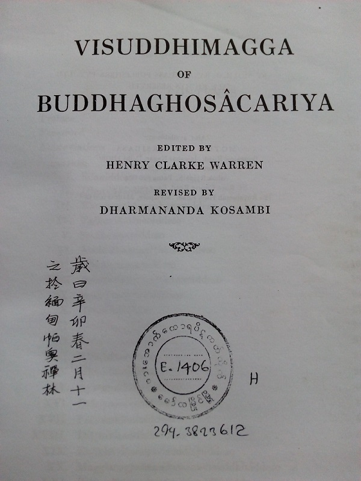

憍賞彌老人
手頭的這本清淨道論複印自緬甸帕奧禪林圖書館（Pa-auk Tawya Cittala Pabbata Library），是由當時禪林的淨人代印的。書沒有讀完，只到第四品，主要就是在緬甸讀的。
書的原編者早逝，由 Dharmananda Kosambi 修訂完成，作為 Harvard Oriental Series Volume 41 出版，前有 Kosambi 的序，作序的時間是1927年，不知為何出版却在1950年，那時 Kosambi 老人都已經作古了。

想起這位 Dharmananda Kosambi，是因為他是金克木的老師，我曾在金的文章中讀到過，所以在當時就頗為驚喜，以為因緣殊勝。且本書的校訂質量極高，較之 P.T.S. 版遠甚，英譯本的分段亦按此本。所以現在檢索金克木集，抄錄一些關於他的事跡，也算是了却一段心願吧。
據金克木集第一卷「天竺舊事」之五「父與子」：
⋯⋯ 名字我們還是用中國古代譯名憍賞彌（1876-1947）。這位老人是佛教信徒，照舊式稱呼法名應當是法喜老居士。
⋯⋯ 他是本世紀初先到波羅柰，後去尼泊爾找佛教沒有找到，轉而南下到錫蘭（斯里蘭卡），得到妙吉（蘇曼伽羅）大法師（1827-1911）晚年親自傳授巴利語經典，熟讀全藏。回印度後，周遊各地。到加爾各答時，⋯⋯ 變成了一個學院的教授，指導研究生。後來他回孟買，又趕上美國哈佛大學的伍茲教授為譯解「瑜伽經」到印度來。伍茲教授的另一任務是為蘭曼教授校勘「清淨道論」尋找合作者。一聽說有他這麼個人，立刻拜訪，一談之下，馬上向學校推薦。隨後憍賞彌居士便由印度一個學院的教授應聘為哈佛大學教授，與蘭曼教授合作。
⋯⋯ 由於蘇聯的史徹巴茨基教授（院士）的推薦，他又應聘為列寧格勒大學教授。因為受不了那裏的嚴寒氣候，過了一段時間便回國，可是思想起了大變化，對馬克思和社會主義產生了信心，不過並沒有改變佛教信仰。他一點兒也不覺得有矛盾。他對佛教有一套自己的理解。
回印度後，⋯⋯ 他同甘地在一起住了一個時期，成為好朋友，交流了不少思想。但甘地的住處是政治活動中心，他在那裏無法長期住下去。甘地入獄，他便離開。有人為他在佛教聖地鹿野苑蓋了一間小屋，布施給他。他才算有個退休落脚地點。兒女都早已獨立了。他成為孤身一人，正如他自己說的，「以比丘始，以比丘終」。所謂「比丘」，原意只是「乞者」。他是居士却從不自稱「優婆塞」（居士），也不自稱比丘。別人總是稱他為教授，正式稱為室利（吉祥）·達摩難陀（法喜）·憍賞彌，或親切些徑稱「達摩難陀吉」，同稱「甘地吉」一樣，加上一個「吉」（先生）的敬稱。
他的一些事跡在同書之三「維也納鋼琴學生」、之七「現代三大士」、之八「漢學三博士」中閒有記述。金克木於「梵竺廬集」自序和「梵佛探」自序中多有感謝和感慨（如稱其為「一位今之古人或古之今人」）。好事者可自行翻閱，恕不多錄。
另外，老人尚著有「攝阿毗達摩義論醍醐疏」Navanīta-ṭīkā ，在 Bhikkhu Bodhi 的書中亦有提及。
在「清淨道論序」中，他對大史中記載的覺音尊者的生平多有批評，見清净道论序，馬哈希尊者在第六次結集時曾撰文反駁，有興趣的可以參見 Visuddhimagga Nidānakathā 。